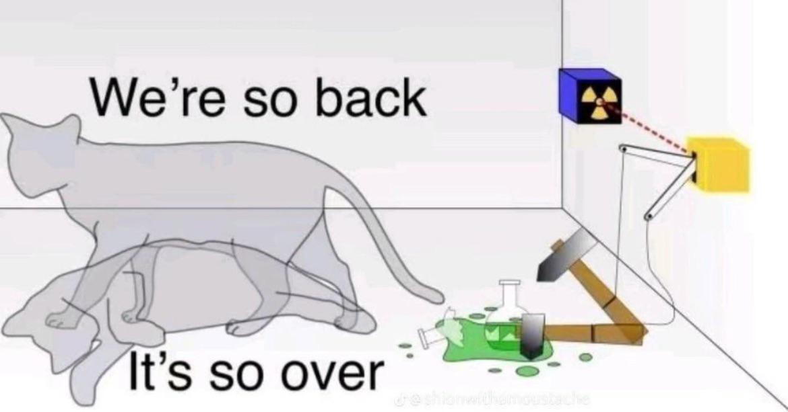

Can you hear the Music?: The Origins of Quantum Mechanics
Find out briefly what quantum mechanics and where it arose from.
Learn more
Since the growing development of the field of quantum physics, a multitude of “medical professionals” and self-help gurus have jumped onboard, proclaiming the secret quantum world that we must tap into in order that we may become prosperous and free from disease. Yet, their claims are riddled with pseudoscience and ignorance of the actual field.
This article aims to discuss the issue, and offer some explanations to what quantum physics really is, so that you, the reader, may better realise the errors of quantum quackery.
Quantum Physics is something that is not that accessible to most of the public for many reasons. Here, however, we hope to clarify particular concepts in the form of analogies.
To be quite frank, many concepts are abused. Though we intend to cover the few that tend to be abused a lot, lest we make this article into its own textbook: Origin of Quantum Physics, Quantum Fields, and Entanglement.
Though, be warned, we cannot promise triviality with these, even using silly analogues- perhaps it is hard to intellectually assent to something that vastly goes-against everyday experience.
But based on what Richard Feynman once famously said, the best thing you can do is to shut up and calculate.

Here are the three areas we selected to briefly introduce to the lay reader: origins/history of quantum physics, quantum field theory, and entanglement!
Find out briefly what quantum mechanics and where it arose from.
Learn moreLearn about the theory that describes physics at super small sizes, and very fast speeds.
Learn moreWhat did Einstein mean by Spooky Action at a distance? - Learn about entangled states.
Learn moreTo conclude, despite the quirkiness of quantum physics, and as mystical as it sounds, the truth is, it’s just math that happens to make very good predictions based on well-constructed mathematical and philosophical arguments.
By and large, there are no quantum fields to harness, nor negative energy to expel. The large brunt of any physics is pretty much like this: the truth of physical nature is always true regardless as apples always fall from trees, even if Newton was wrong and Einstein was right with General Relativity– in fact, even if his theory is not complete at explaining what happens inside of black holes.
The mathematics in physics is likened to Platonic Ideals: it does not say exactly what the light is, but it is like its reflection on the walls of the cave or the river. Matter is always matter, but once it was Democritus cutting cheese and calling them atomos (atoms), right now it is Quantum Physics that explained what happens inside them.